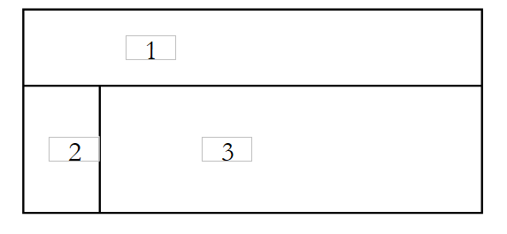

2. Ein Entwicklungsansatz für Web-/PHP-Anwendungen im Rahmen der MVC-Architektur
Wir schlagen hier einen Ansatz für die Entwicklung von Web-/PHP-Anwendungen vor, der der Architektur MVC entspricht. Er dient lediglich dazu, Denkanstöße zu geben. Der Leser wird ihn an seine Vorlieben und Bedürfnisse anpassen.
- Zunächst werden alle Ansichten der Anwendung definiert. Dabei handelt es sich um die Webseiten, die dem Benutzer angezeigt werden. Bei der Gestaltung der Ansichten versetzen wir uns in die Perspektive des Benutzers. Man unterscheidet drei Arten von Ansichten:
- das Eingabeformular, das dazu dient, Informationen vom Benutzer zu erfassen. Dieses verfügt in der Regel über eine Schaltfläche, um die eingegebenen Informationen an den Server zu senden.
- die Antwortseite, die ausschließlich dazu dient, dem Benutzer Informationen zu liefern. Diese verfügt oft über einen oder mehrere Links, über die der Benutzer die Anwendung mit einer anderen Seite fortsetzen kann.
- die gemischte Seite: Der Controller hat dem Client eine Seite mit von ihm generierten Informationen gesendet. Diese Seite dient dem Client dazu, dem Controller neue Informationen vom Benutzer zu übermitteln.
- Jede Ansicht erzeugt eine Seite mit dem Namen PHP. Für jede dieser Seiten:
- wird das Erscheinungsbild der Seite gestaltet
- Es wird ermittelt, welche Teile davon dynamisch sind:
- die für den Benutzer bestimmten Informationen, die vom Controller als Parameter an die Ansicht PHP übergeben werden müssen. Eine einfache Lösung sieht wie folgt aus:
- Der Controller legt die Informationen, die er einer Ansicht V bereitstellen möchte, in einem Dictionary $dReponse ab
- Der Controller lässt die Ansicht V anzeigen. Entspricht diese der Quelldatei V.php, erfolgt diese Anzeige einfach über die Anweisung `include V.php`.
- Bei der vorangegangenen Einbindung handelt es sich um eine Code-Einbindung in den Controller. Auf das von diesem gefüllte Dictionary $dReponse kann direkt über den Code von V.php zugegriffen werden.
- Die Eingabedaten, die zur Verarbeitung an das Hauptprogramm übermittelt werden müssen. Diese müssen Teil eines Formulars HTML sein (Tag <form>).
- die für den Benutzer bestimmten Informationen, die vom Controller als Parameter an die Ansicht PHP übergeben werden müssen. Eine einfache Lösung sieht wie folgt aus:
- Die Ein- und Ausgänge jeder Ansicht lassen sich schematisch darstellen
 |
- Die Eingaben sind die Daten, die der Controller an die Seite PHP liefern muss
- Die Ausgänge sind die Daten, die die Seite PHP an den Controller der Anwendung liefern muss. Sie sind Teil eines Formulars HTML, und der Controller ruft sie über eine Operation vom Typ $_GET["param"] (Methode GET) oder $_POST["param"] (Methode POST) abrufen.
- Häufig ist die an den Client gesendete Endseite keine Ansicht, sondern eine Zusammensetzung aus Ansichten. Beispielsweise kann die an einen Benutzer gesendete Seite wie folgt aussehen:
 |
Bereich 1 kann ein Titelbanner sein, Bereich 2 ein Menübanner und Bereich 3 ein Inhaltsbereich. In PHP lässt sich diese Zusammensetzung durch den folgenden Code HTML/PHP erzielen:
<table>
<tr>
<td><?php include zone1.php ?></td>
</tr>
<tr>
<td><?php include zone2.php ?></td>
<td><?php include zone3.php ?></td>
</tr>
</table>
Man kann diesen Code dynamisch gestalten, indem man Folgendes schreibt:
<table>
<tr>
<td><?php include $dReponse['urlZone1'] ?></td>
</tr>
<tr>
<td><?php include $dReponse['urlZone2'] ?></td>
<td><?php include $dReponse['urlZone3'] ?></td>
</tr>
</table>
Diese Zusammensetzung von Ansichten kann das einzige Format der Antwort an den Benutzer sein. In diesem Fall muss jede Antwort an den Kunden die drei URL festlegen, die in die drei Bereiche geladen werden sollen, bevor die Antwortseite angezeigt wird. Man kann dieses Beispiel verallgemeinern, indem man sich vorstellt, dass es mehrere mögliche Vorlagen für die Antwortseite gibt. Die Antwort an den Kunden muss daher:
- die zu verwendende Vorlage festlegen
- die darin einzubindenden Elemente festlegen
- die Anzeige der Vorlage anfordern
- Man schreibt den Code PHP/HTML für jede Antwortvorlage. Der Code ist in der Regel einfach. Der Code aus dem obigen Beispiel könnte wie folgt lauten:
<?php
// Initialisierungen für Tests ohne Controller
...
?>
<html>
<head>
<title><?php echo $dReponse['titre'] ?></title>
<link type="text/css" href="<?php echo $dReponse['style']['url'] ?>" rel="stylesheet" />
</head>
<body>
<table>
<tr>
<td><?php include $dReponse['urlZone1'] ?></td>
</tr>
<tr>
<td><?php include $dReponse['urlZone2'] ?></td>
<td><?php include $dReponse['urlZone3'] ?></td>
</tr>
</table>
<body>
</html>
Wann immer möglich, wird ein Stylesheet verwendet, um das „Aussehen“ der Antwort ändern zu können, ohne den Code PHP/HTML ändern zu müssen.
- Der Code PHP/HTML wird für jede einzelne Ansicht geschrieben. Er hat meist die folgende Form:
<?php
// ggf. einige Initialisierungen, insbesondere in der Debugging-Phase
...
?>
<balise>
...
// Hier wird versucht, den PHP-Code zu minimieren
</balise>
Es ist zu beachten, dass eine Elementaransicht in ein Modell eingebettet wird. Ihr Code HTML wird in den Code des Modells integriert. Meistens enthält dieser bereits die Tags <html>, <head> und <body>. Daher kommen diese Tags in einer Elementaransicht nur selten vor.
- Man kann die verschiedenen Antwortmodelle und Elementaransichten testen
- Jedes Antwortmodell wird getestet. Wenn ein Modell den Namen modele1.php trägt, wird mit einem Browser die Seite URL unter http://localhost/chemin/modele1.php aufgerufen. Das Modell erwartet Werte vom Controller. Hier wird es direkt und nicht über den Controller aufgerufen. Das Modell erhält die erwarteten Parameter nicht. Damit die Tests dennoch möglich sind, werden die erwarteten Parameter auf der Seite PHP des Modells selbst mit Konstanten initialisiert.
- Jedes Modell wird ebenso wie alle elementaren Ansichten getestet. Dies ist auch der richtige Zeitpunkt, um die ersten Elemente der verwendeten Stylesheets auszuarbeiten.
- Anschließend wird die Anwendungslogik der Anwendung geschrieben:
- Der Controller oder das Hauptprogramm verwaltet in der Regel mehrere Aktionen. In den an ihn gesendeten Anfragen muss die auszuführende Aktion definiert sein. Dies kann über einen Parameter der Anfrage erfolgen, den wir hier „action“ nennen:
- Wenn die Anfrage von einem Formular stammt (<form>), kann dieser Parameter ein versteckter Parameter des Formulars sein:
<form ... action="/C/main.php" method="post" ...>
<input type="hidden" name="action" value="uneAction">
...
</form>
- (Fortsetzung)
- Wenn die Anfrage über einen Link erfolgt, kann dieser wie folgt konfiguriert werden:
Der Controller kann zunächst den Wert dieses Parameters auslesen und anschließend die Bearbeitung der Anfrage an ein Modul delegieren, das für die Verarbeitung dieser Art von Anfragen zuständig ist. Wir sind hier von dem Fall ausgegangen, dass alles von einem einzigen Skript namens main.php gesteuert wird. Wenn die Anwendung Aktionen wie action1, action2, …, actionx verarbeiten muss, kann man innerhalb des Controllers eine Funktion pro Aktion erstellen. Bei einer großen Anzahl von Aktionen kann es jedoch zu einem „Dinosaurier“-Controller kommen. Man kann auch Skripte wie action1.php, action2.php, …,actionx.php erstellen, die jeweils für die Verarbeitung einer bestimmten Aktion zuständig sind. Der Controller, der die Aktion „actionx“ verarbeiten soll, lädt lediglich den Code des entsprechenden Skripts mit einer Anweisung wie „include ‚actionx.php‘“ ein. Der Vorteil dieser Methode besteht darin, dass man außerhalb des Controller-Codes arbeitet. Jedes Mitglied des Entwicklungsteams kann so relativ unabhängig am Skript zur Verarbeitung einer Aktion „actionx“ arbeiten. Das Einbinden des Skriptcodes actionx.php in den Controller-Code zum Zeitpunkt der Ausführung hat zudem den Vorteil, dass der in den Speicher geladene Code schlanker wird. Es wird nur der Code zur Verarbeitung der aktuellen Aktion geladen. Diese Einbindung von Code führt dazu, dass Variablen des Controllers mit denen des Aktionsskripts in Konflikt geraten können. Wir werden sehen, dass wir die Variablen des Controllers auf einige genau definierte Variablen beschränken können, deren Verwendung in den Skripten dann vermieden werden sollte.
- Wir werden systematisch versuchen, den Geschäftslogik-Code oder den Code für den Zugriff auf persistente Daten in separate Module auszulagern. Der Controller ist eine Art Teamleiter, der Anfragen von seinen Kunden (Web-Clients) entgegennimmt und diese von den am besten geeigneten Personen (den Geschäftslogik-Modulen) ausführen lässt. Beim Schreiben des Controllers wird die Schnittstelle der zu erstellenden Geschäftsmodule festgelegt. Dies gilt, sofern diese Geschäftsmodule erst noch erstellt werden müssen. Sind sie bereits vorhanden, passt sich der Controller an die Schnittstelle dieser bestehenden Module an.
- Man schreibt das Grundgerüst der für den Controller erforderlichen Geschäftsmodule. Wenn dieser beispielsweise ein Modul getCodes verwendet, das ein Array von Zeichenketten zurückgibt, kann man sich zunächst damit begnügen, Folgendes zu schreiben:
- Anschließend kann man mit den Tests des Controllers und der zugehörigen PHP-Skripte fortfahren:
- Der Controller, die Aktionsskripte, die Modelle, die Ansichten sowie die für die Anwendung erforderlichen Ressourcen (Bilder usw.) werden im Ordner „DC“ abgelegt, der dem Anwendungskontext „C“ zugeordnet ist.
- Anschließend wird die Anwendung getestet und erste Fehler behoben. Wenn main.php der Controller und C der Anwendungskontext ist, wird die URL-http://localhost/C/main.php aufgerufen. Am Ende dieser Phase ist die Architektur der Anwendung betriebsbereit. Diese Testphase kann schwierig sein, da nur wenige Debugging-Tools zur Verfügung stehen, wenn man keine fortschrittlichen und in der Regel kostenpflichtigen Entwicklungsumgebungen verwendet. Man kann sich dabei mit echo-Anweisungen „message“ behelfen, die in den an den Client gesendeten Datenstrom HTML schreiben und somit auf der vom Browser angezeigten Webseite erscheinen.
- Schließlich werden die vom Controller benötigten Geschäftsklassen geschrieben. Dabei handelt es sich in der Regel um die klassische Entwicklung einer PHP-Klasse, die meist unabhängig von einer Webanwendung ist. Sie wird zunächst außerhalb dieser Umgebung getestet, beispielsweise mit einer Konsolenanwendung. Sobald eine Geschäftsklasse geschrieben wurde, wird sie in die Bereitstellungsarchitektur der Webanwendung integriert und auf ihre korrekte Integration getestet. Dieser Vorgang wird für jede Geschäftsklasse wiederholt.